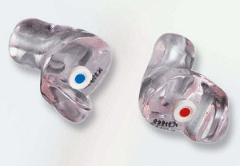

Otoplastiken sind im Ohr getragene Gehörschützer, die für den einzelnen Gehörgang individuell angefertigt werden.
Sie sind zu empfehlen, wenn
Auf Grund ihrer individuellen Anfertigung können Otoplastiken nur korrekt – nämlich in der vorgegebenen Position – getragen werden. Bei fachgerechter Herstellung und Anpassung und jährlicher Funktionskontrolle erreichen sie somit die beabsichtigte Schutzwirkung.
Alle anderen Gehörschutzstöpsel können hingegen mehr oder weniger tief in den Gehörgang eingesetzt werden. Nicht ausreichend tiefes Einsetzen der Stöpsel beeinträchtigt die Schutzwirkung jedoch erheblich.